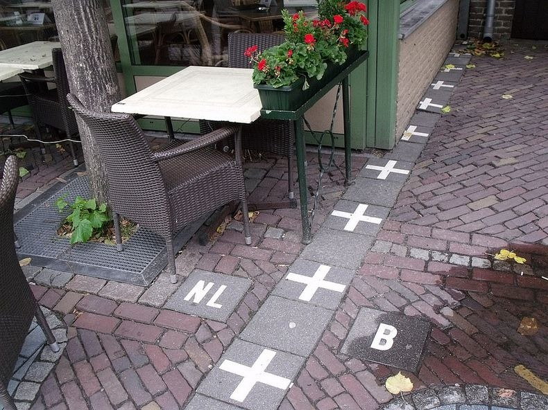

Flags of the neighboring countries flying together in Baarle Image Source
Baarle-Hertog, Belgium, and Baarle-Nassau, Netherlands epitomizes the peculiarity of borders in urban areas. The two towns, though in different countries, are interwoven into each other. There are 22 Belgian exclaves1 in this town, and 8 Dutch exclaves in within the Belgian exclaves. This complex network of exclaves and enclaves2 is a product of historical treaties and agreements. The Treaty of Maastricht of 1843 which defined the Dutch and Belgian borders could not define the border of this historically complex town. The land surrounding the town was given to the Netherlands, however, the town remained as is. As the years passed, land disputes increased the number of pseudo-enclaves in the town. The enclave and exclave borders were formalized in 1995.
Border between the Netherlands and Belgium. Image Source
Although every border is demarcated, since both countries are members of the Schengen area3, there is no border patrol. It would be difficult to establish any border control in the down due to the sheer number of borders, and the fact that a lot of these borders pass through storefronts, cafés, restaurants, and even houses. If a border was to pass through a building, the owners would pay taxes to whichever country the front door is located it.
The complexity of this town brings into question where each country’s laws are applied. You can hypothetically do something illegal in Netherlands, but take one step over into Belgium where the act you committed is completely legal. You could even have one foot in each country and commit such an act. Would you then be charged using Dutch or Belgian laws?
The only problems that arise are from these legal questions, however. The town has been culturally integrated for years, so there is virtually no cultural or linguistic difference. Additionally, as both countries are members of the European Union and the Eurozone, they use the same currency, and follow, more or less, the same guidelines. The border is a mere way to settle land ownership and taxes between the two countries’ nationals. The town has become a tourist attraction and also displays a unique intermingling of Dutch and Belgian culture, which is an added economic and cultural advantage to the Baarles.
"Baarle-Hertog and Baarle Nassau." European Small Exclaves. Municipality of Campione D'Italia, n.d. Web. 14 June 2017.
Benfield, Kaid. "The Most Complicated Border Town in the World." CityLab. N.p., 17 Feb. 2012. Web. 14 June 2017.
Smith, Barry. " Baarle-Nassau/Baarle-Hertog." State University of New York at Buffalo, n.d. Web. 14 June 2017.
1A region of the country that is separated from it by foreign land
2A region of foreign territory surrounded by a country
3An area comprising 26 European countries that have abolished passport and other types of border control
{kind=link}
{kind=link}